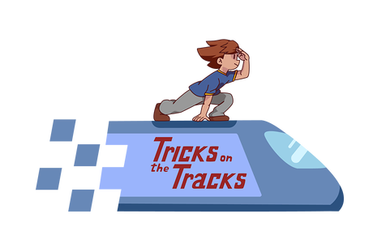

CONTINUE SURFANDO!
"Todos abordo no expresso ao redor do mundo!"
Seja Mark, o melhor e único surfista de trens já visto. Corra riscos, conheça o mundo e de forma divertida com gráficos de 16 bits com uma mecânica interna super secreta, aonde quer que você esteja e a qualquer momento!
Em desenvolvimento e em breve em Smartphones!